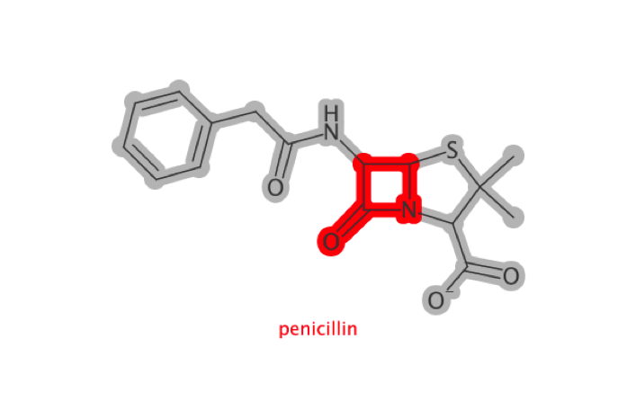

Installation
You can install depict from github with:
# install.packages("devtools")
devtools::install_github("zachcp/depict")Simple Depiciton
A simple wrapper around cdk’s excellent depict module.
library(depict)
library(magrittr)
library(grid)
# you must supply java colors
color <- J("java.awt.Color")
# load in penicillin
pen <- parse_smiles("CC1(C(N2C(S1)C(C2=O)NC(=O)CC3=CC=CC=C3)C(=O)[O-])C penicillin")
cav <- parse_smiles("CN1C=NC2=C1C(=O)N(C(=O)N2C)C")
# define the regions to highlight
# either all atoms/bonds
# or a SMARTS-defined subregion
atms <- pen$atoms()
bnds <- pen$bonds()
lactam <- match_smarts("C1(=O)NCC1", pen)
# use piping to change the behavior as desired
depiction() %>%
highlight_atoms(atms, color$LIGHT_GRAY) %>%
highlight_atoms(bnds, color$LIGHT_GRAY) %>%
highlight_atoms(lactam, color$RED) %>%
set_size(400, 400) %>%
set_zoom(3) %>%
outerglow() %>%
add_title() %>%
depict(pen) %>%
get_image() %>%
grid::grid.raster()

A Larger Example
insulinmol <- system.file("molfiles/ChEBI_5931.mol", package="depict")
insulin <- read_mol(insulinmol)
cysteine <- match_smarts("C(=O)C(CS)N", insulin)
xlinks <- match_smarts("SS", insulin)
dp <- depiction()%>%
set_size(700, 400) %>%
set_zoom(10) %>%
outerglow() %>%
highlight_atoms(cysteine, color$YELLOW) %>%
highlight_atoms(xlinks, color$YELLOW) %>%
depict(insulin) %>%
get_image() %>%
grid::grid.raster()
Coding notes
A few notes about setup:
- Java can be touch on OSX in particular. When in doubt try
sudo R CMD javareconfand reinstall rJava from source. - Currently I am using the
$operator in just about all of my functions. This makes it about a billion times easier and more succinct to code at the price of performance. If performance becomes an issue we can use low-level calls. If its important to you I’m happy to accept pull requests. - The API is still in flux. I am currently happy with the design but there are a few areas where I’d like to kick the tires a bit more - especially in regards to selection.
- java.awt.colors are a bit tough to warp since there are many arities and classes accepted.. I think I will provide a number of colors.
- SMARTS selectors. common smarts selections for AminoAcids, Nucleic Acids, Sugars may be worth including as well.